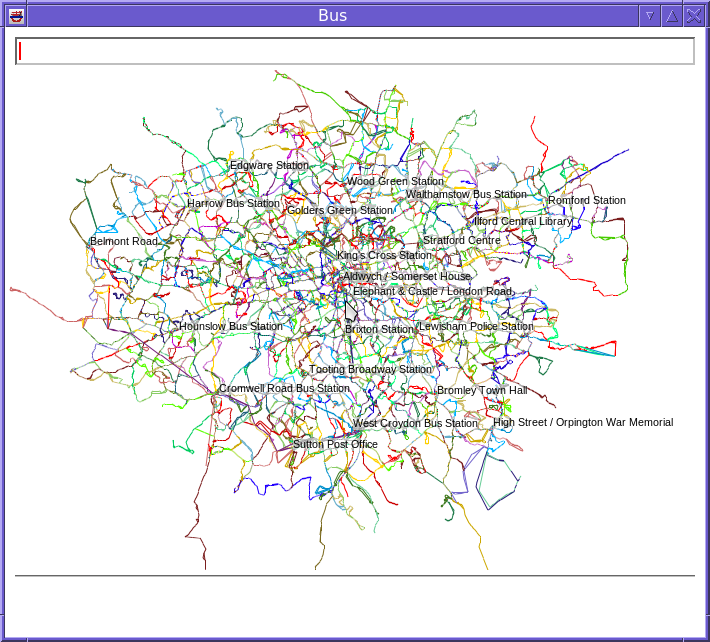
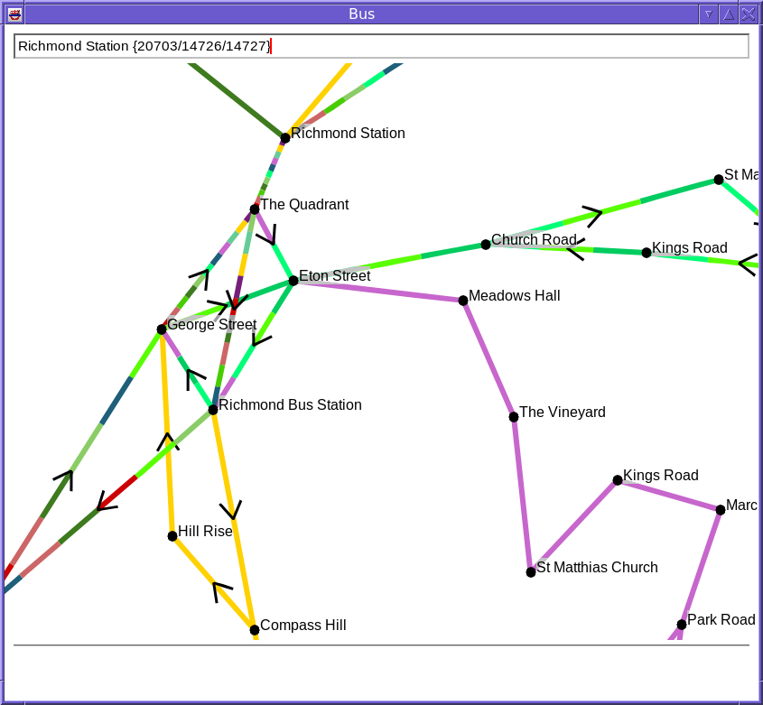
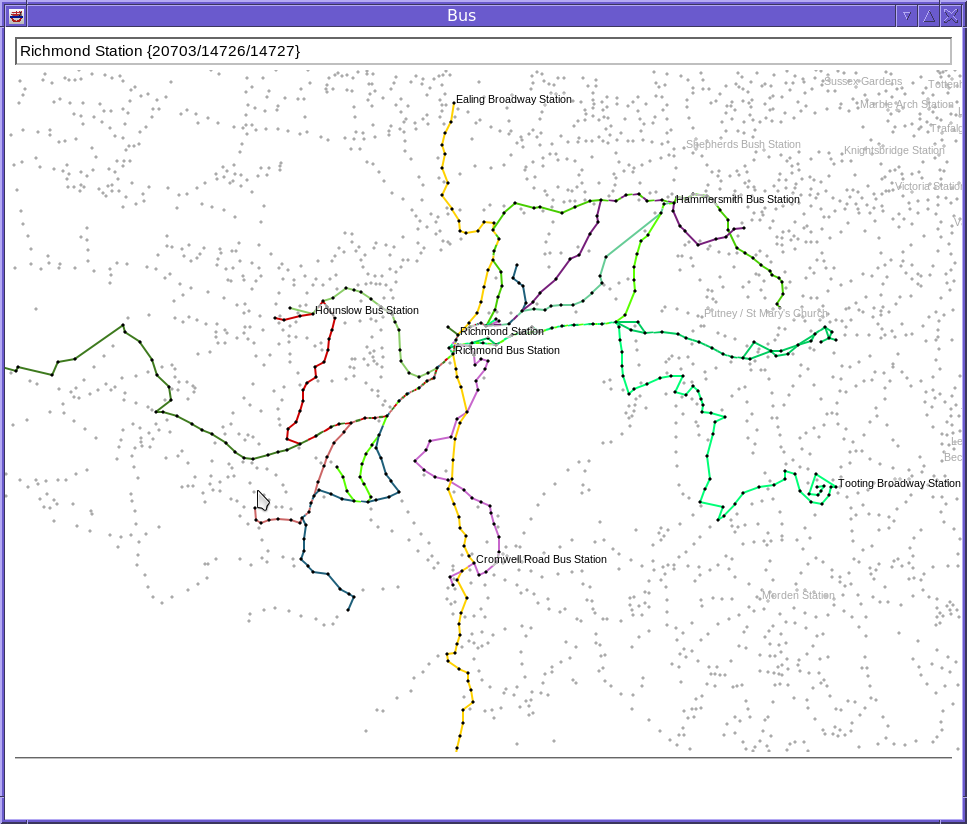

This is a program which displays a map of the London bus network. In order to run, it requires some additional files, which are contained in the file busroutes.tar.gz, which can be downloaded from the sourceforge misc directory. Extract this file in your home directory. It will create a directory busroutes. You can extract it somewhere else if you wish, but then you will need to pass the directory to the bus program with the -d option.
At startup, a view of the entire bus network is shown.

To zoom in and out, use mouse wheel up and down respectively. To move the map, drag the mouse. To locate a specific bus stop quickly, type its name in the text field at the top and press return.
Each bus route has a particular colour. Lines between stops are multi-coloured if several routes traverse between them. Arrows are shown if a line between stops is in one direction only.
Here is a view of the routes around Richmond, at full zoom. Note the how the line between “The Quadrant” and “Richmond Station” is multi-coloured; there are 11 routes between those two stops.

Moving the mouse over a stop or a line between stops will show the routes that run there.
Right-clicking on a stop or a line lets a filter be set, so that only particular routes are displayed. Filters can be saved in a file and loaded by right clicking on a blank part of the screen. This menu also lets the filter be cleared.
Here is an example of a filter which show all the routes from Richmond Station.

To see the shortest route between two stops, select “Mark” on the first stop, and “Join” on the second. The shortest route is then indicated by the stops with a red dot in the centre.
busroutes in the same directory as the bus program, or failing that in the home directory.